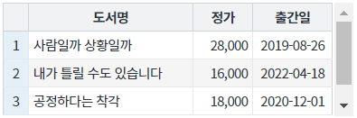
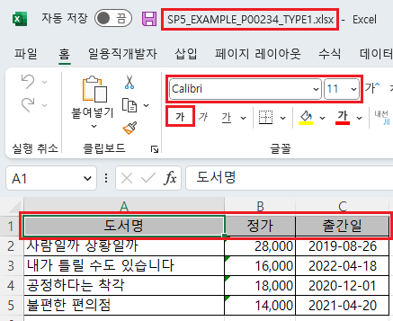
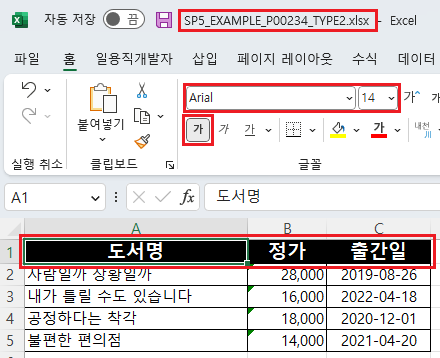
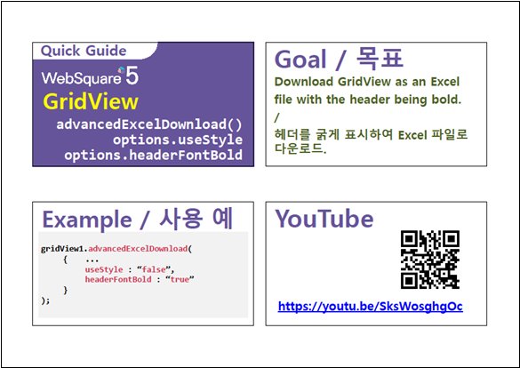

GridView의 엑셀 다운로드(함수 'advancedExcelDownload') 옵션 중 헤더의 스타일을 적용할 수 있는 옵션 설정의 예제입니다. 헤더 스타일을 지정할 수 있는 옵션은 아래와 같습니다. - headerColor : [default: #33CCCC] Excel 파일에서 그리드의 header 색 - headerFontName : [default: 없음] Excel 파일에서 그리드의 header의 font name - headerFontSize : Excel 파일에서 그리드의 header의 font size - headerFontColor : [default: 없음] Excel 파일에서 그리드의 header의 font 색 - headerFontBold : [default: "false"] Excel 파일에서 그리드의 header의 Bold 적용 유무
이 옵션은 'useStyle'을 'false'로 지정해야 동작합니다.
엑셀 다운로드 - 기본 동작
엑셀 다운로드 - 헤더의 스타일 적용
다운로드된 엑셀 파일의 헤더 영역의 스타일을 비교합니다.
실행된 GridView를 확인합니다.
[브라우저(Chrome) 실행 예시]

엑셀 파일 "SP5_EXAMPLE_P00234_TYPE1.xlsx"이 다운로드 됩니다.
다운로드 된 엑셀 파일 'SP5_EXAMPLE_P00234_TYPE1.xlsx'을 실행합니다.
헤더 영역의 스타일을 확인합니다.
(배경색, 글자체, 글자 크기, 글자색, 글자 굵게 적용 여부)
배경색을 제외한 나머지 설정은 엑셀에 설정된 기본 값으로 적용됩니다.
[다운로드된 엑셀(2021) 파일 예시]

실행된 GridView를 확인합니다.
[브라우저(Chrome) 실행 예시]
엑셀 파일 "SP5_EXAMPLE_P00234_TYPE2.xlsx"이 다운로드 됩니다.
다운로드 된 엑셀 파일 'SP5_EXAMPLE_P00234_TYPE2.xlsx'을 실행합니다.
헤더 영역의 스타일을 확인합니다.
- 배경색 : "black"
- 글자체 : "Arial"
- 글자 크기 : "14"
- 글자색 : "white"
- 글자 굵게 적용 : "true"
[다운로드된 엑셀(2021) 파일 예시]

[소스 코드 예시]
//예제 파일의 스크립트 "scwin.btn_ex2_onclick"를 참고하세요. var jsnOptions; jsnOptions = { fileName: "SP5_EXAMPLE_P00234_TYPE2.xlsx", //엑셀의 파일명 useStyle : "false", //필수 지정 headerColor : "black", //헤더의 배경색 headerFontName : "Arial", //헤더의 글자체 headerFontSize : "14", //헤더의 글자 크기 headerFontColor : "white", //헤더의 글자색 headerFontBold : "true" //헤더의 글자 굵게 적용 }; //options.useStyle <String:N> [default: false] 다운로드시 css를 제외한, style을 excel에도 적용할 지 여부 (배경색,폰트) //options.headerColor : <String:N> [default: #33CCCC] Excel 파일에서 그리드의 header 색 //options.headerFontName : <String:N> [default: 없음] Excel 파일에서 그리드의 header의 font name //options.headerFontSize : <String:N> Excel 파일에서 그리드의 header의 font size //options.headerFontColor : <String:N> [default: 없음] Excel 파일에서 그리드의 header의 font 색 //options.headerFontBold : <String:N> [default: "false"] Excel 파일에서 그리드의 header의 Bold 적용 유무 //GridView "grd_exam1"의 엑셀 다운로드 실행 grd_exam1.advancedExcelDownload(jsnOptions);
options.headerColor
options.headerFontName
options.headerFontSize
options.headerFontColor
options.headerFontBold
[웹스퀘어5 SP5 개발 가이드] GridView
링크 : https://docs1.inswave.com/sp5_user_guide/bc10c1b82c9a2a0b#e1c4658baf7e726f
[웹스퀘어5 SP5 개발 가이드] GridView → Excel 다운로드
링크 : https://docs1.inswave.com/sp5_user_guide/bc10c1b82c9a2a0b#9fb910628c27d550
[웹스퀘어5 SP5 개발 가이드] Excel 파일 스타일 설정
링크 : https://docs1.inswave.com/sp5_user_guide/bc10c1b82c9a2a0b#7a3bda36f7d0b2e6
GridView Excel 파일에서 헤더 폰트를 굵게 표시
링크 : https://youtu.be/SksWosghgOc
